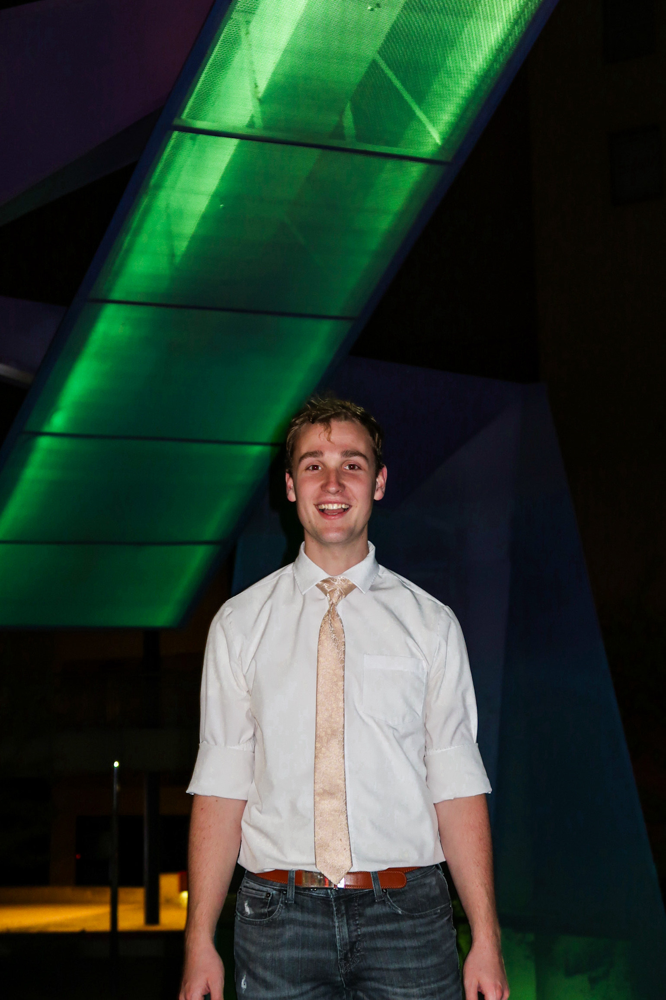
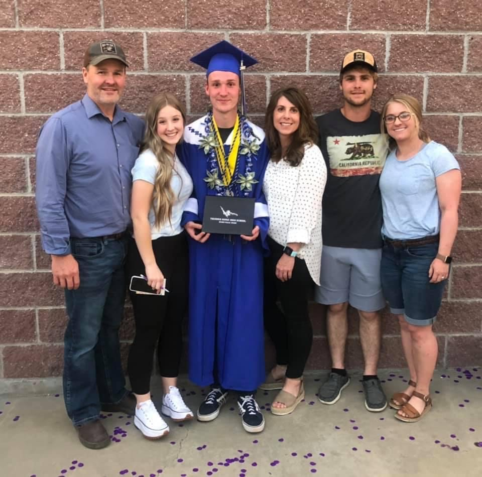

About Me

I am from Ammon, Idaho, where I have lived since I was born in 2003. I love everything about technology, and also greatly
enjoy music. Most of my time is spent programming, learning about new, developing technologies, or listening to or
writing music.
Educiation
I have loved learning my entire life and am continuing my pursuit to learn by attending Brigham Young University-Idaho.
In my high school experience, I worked hard to achieve a high level of education, taking many dual credit and advanced
placement classes. This allowed me to be a Summa Cum Laude graduate, and offered a great launch into my college experience.
I started my college experience by pursuing a degree in Physics with a specialty in astronomy, but because of a canceled
class, I took an intro to programming class as a filler. I found a passion for programming, and in due course decided to
switch from Physics to a more programming focused major. Now I am currently working towards a degree in the Computer Science
field, and hope to learn in part to be a full stack developer, along with knowledge in the machine learning field.
